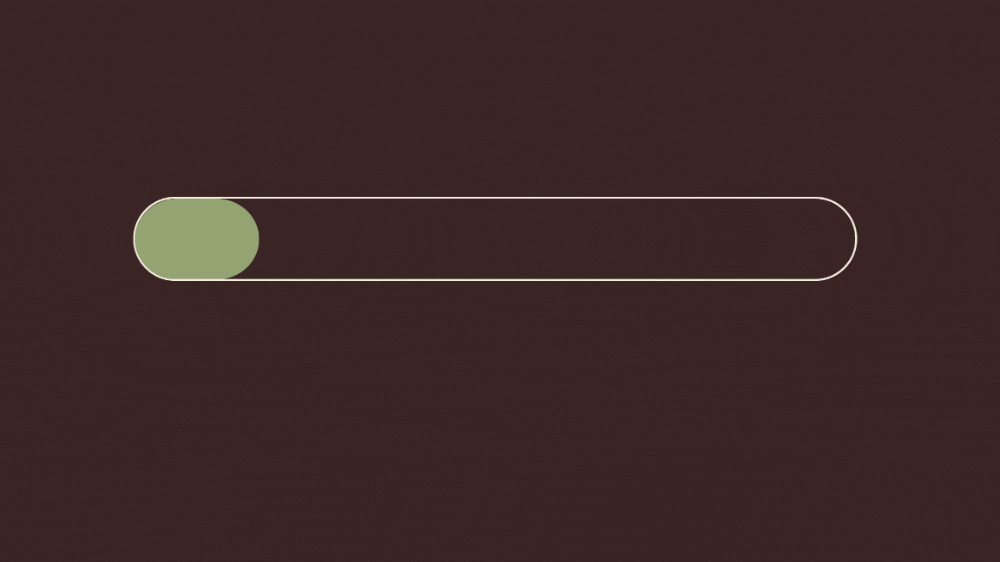

EM CONSTRUÇÃO
10 ilhas compõe Cabo Verde, mas sua essência se estende para além do oceano Atlântico. A 11ª ilha, invisível aos mapas, mas presente em cada rua estrangeira onde a sodad pulsa. Essa é a diáspora viva — feita de passos que cruzaram oceanos, de vozes que se entrelaçam em mornas e batuques, de memórias carregadas no peito como quem leva o mar dentro de si. “Cartas da Diáspora” nasce desse pulsar, das vozes que ecoam quebrando as distâncias. Este projeto busca transformar saudade em encontro, ausência em palavra, identidade em resistência. É um espaço onde cada carta é um abraço, cada história um retorno. Faça parte dessa ilha que não se vê, mas se sente — a ilha di nós genti, espalhada pelo mundo, mas eternamente cabo-verdiana.
